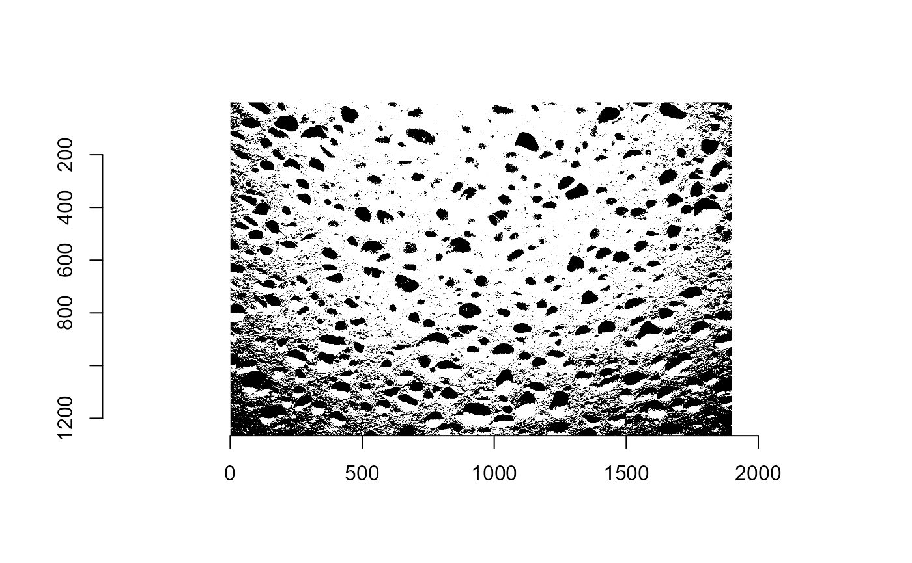

Theoretic estimations.
Theoretic.Rd2 functions: 'bw_mat()' and 'th_i_est()', offering exploration of
theoretical estimates of an image. For more details use:
browseVignettes(package = "Stereology")
Arguments
- image_path
The path where the image is stored.
- thr
The threshold used to turn the image in black and white. The default value is 0.5.
- mtr
A matrix generated using the function 'bw_mat()'.
- x
Numeric variable. The index of the pixel-row to start the grid.
- y
Numeric variable. The index of the pixel-column to start the grid.
- lx
Numeric variable. The amount of horizontal indices to be used.
- ly
Numeric variable. The amount of vertical indices to be used.
Value
The function 'bw_mat()' returns a list containing:
1) the matrix that represents the black and white version of the image that
was used as input, and
2) the plot of the black and white version of the image.
The function 'th_i_est()' returns a list containing:
1) point_mean: the mean of black pixels for the point grid method, and
2) line_mean: the mean of black pixels for the line grid method.
Examples
# Loading the image.
# To use a PNG/JPEG/BMP image stored on your computer try:
# path <- "~/images.png"
path <- system.file('extdata/sponge3.jpg',package='Stereology')
# Applying bw_mat().
a <- bw_mat(path)

# Applying th_i_ests()
est_a <- th_i_ests(mtr = a$img_mat, x = 400, y = 100, lx= 5, ly = 10)
est_a
#> $point_mean
#> [1] 0.875
#>
#> $line_mean
#> [1] 0.7010061
#>
# For more details use: browseVignettes(package = "Stereology").